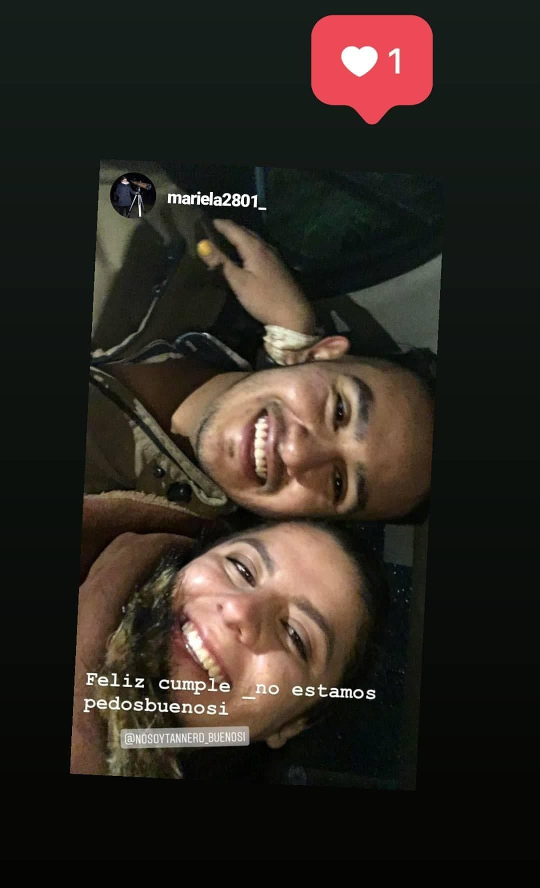
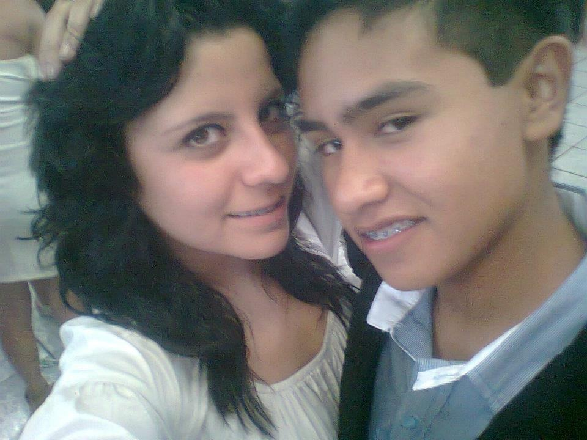
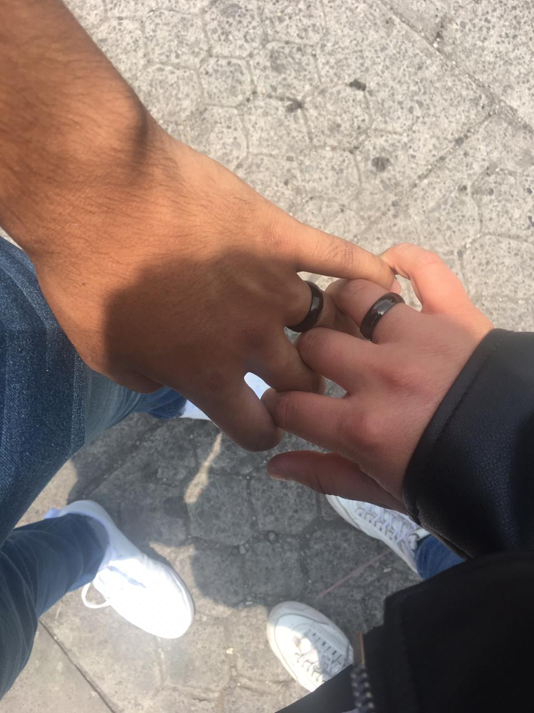

La vida es muy efimera. En estos días comprendí, que un día vivido no es un sólo un día más sino, un día menos, razón por la cuál decidí comenzar a escribir esta carta...
Inicialmente, todo este escrito era un pequeño detalle con motivo de nuestro segundo mes de novios y el tercero de vernos de manera continúa, no estaba muy seguro de si debía escribir esto, sin embargo, a raíz de que no sabemos qué es lo que pueda pasar mañana tomé la desición de culminar estas pequeñas pero significativas líneas, para de esa manera expresarte mi sentir y muchas de las cosas que aunque puede que te haya dicho en repetidas ocasiones, quiero que tengas muy presentes.
Primero que nada, me siento con la necesidad de decirte lo agradecido que estoy contigo por la cantidad de cosas que te he aprendido, como el amor a los perros, como el no querer ser feliz contigo sino, ser feliz por mí para compartir esa felicidad juntos; hacer las cosas por y para mí. Realmente, no tengo las palabras necesarias para poder expresar todo lo que llevo dentro de mí en este preciso momento o para expresar mi sentir hacía ti, ahí es donde me doy cuenta que lo que siento, es más real que lo que haya podido llegar a sentir por alguien en alguna ocasión, es simple y sencillamente inefable, como el amor.
En los últimos meses has sido la persona que me ha levantado más veces cuando me caigo, porqué aunque el día esté nublado, tú haces que brille con tu sonrisa, porqué logras reanimarme con un simple abrazo o un beso, y eso es algo que, pase lo que pase, siempre te voy a agradecer de manera exhorbitante; por levantarme, por invitarme con tu familia, por venir con mi familia, por querer a mis sobrinas, por llevarte bien con mi mamá, por llevarte bien con mi hermana... son tantas cosas, que simplemente, si tratara de enlistarlas nunca terminaría, simple y sencillamente ¡Gracias!
A pesar de que no he sido el mejor novio de todos, quiero que sepas que el cariño que siento por ti, es realmente sincero, te prometo que estoy dando lo mejor de mí y sigo tratando de mejorar ese aspecto; no soy perfecto y estoy consciente de ello, tengo muchos defectos y la realidad es que sigo tratando de descubrir cómo es que se trata con alguna persona por tanto tiempo sin que las cosas se desgasten o haya tantas fricciones, no me justifico, tan sólo quiero que sepas que todo esto que es nuevo para mí, lo quiero descubrir contigo.
Por último, pero no menos cursi, quiero dejarte aquí, una lista de las cosas que más me gustan de ti y algunos Fun facts, para que el día que te sientas un poco triste o me extrañes un poco quizá puedas venir, leer esto y recordar por qué es que eres una maravillosa persona y, por supuesto, por qué es que te quiero tanto...
- Porque eres la más bonita
- Porque tu lado cursi es muy bonito
aunque no aparezca a menudo
- Porque me generas toda la confianza del mundo
- Porque tus ojos son hermosos y siempre brillan
- Por la manera en que me besas
- Por la manera en que me orientas
- Porque siempre me haces ver el lado positivo de las cosas
- Por como haces que me tranquilice
- Por tu manera de pensar
- Porque cuando te llevo de la mano, siento que soy el vato más afortunado en el universo entero
- Porque te llevas bien con mi familia
- Porque cada día aprendo algo de ti
- Porque me haces ser mejor persona
- Porque contigo nunca me aburro
- Porque al no pedirme nada, mereces todo
- Porque eres independiente
- Porque podemos hablar de cualquier cosa
- Porque eres muy transparente
- Porque cuando veo tus ojos, encuentro paz
- ¿Ya mencioné que eres hermosa?
- Porque me haces sentir orgulloso
- Porque eres muy inteligente
- Porque te interesas por mi trabajo
- Porque me haces sentir que soy el mejor aunque no esté ni cerca de ello
- Porque me enseñas cosas que no sabía que podían gustarme
- Porque me haces ser menos
mamón
- Porque moderas mis gastos inútiles jaja
- Porque sacas lo mejor de mí
- Porque te gusta leer
- Porque te gusta viajar
- Porque cuidas el medio ambiente y me enseñas a hacerlo
- Porque me permites tratar de darte todo, aunque sabemos que cuando tú quieres algo lo puedes conseguir por ti misma
- Porque me das mi lugar
- Porque aguantas mis cambios de humor repentinos
- Porque me dices que me veo guapo
aunque yo no lo considere así
- Por esos abrazos y besos tan repentinos
- Porque contigo puedo ser tan tonto como soy en verdad
- Porque aguantas mis conversaciones nerds
- Porque tu sonrisa es la más bonita
- Por la confianza que me tienes
- Porque me veo contigo en esta y cuatro vidas más
- Porque eres muy inteligente
- Porque no es que tú valgas la pena... Tú lo vales TODO
- Porque me regañas cuando estoy haciendo algo mal en algún aspecto
- Porque me escuchas
- Por todo el apoyo que me brindas
- Porque logras hacerme sentir mejor con un abrazo
- Porque me quieres por lo que soy
- Porque aguantas mis aires de grandeza
- Porque hasta recién levantada te ves preciosa
- Porque tienes la voz perfecta para regañar a nuestros hijos en un futuro
- Porque lograste que volviera a confiar en alguien
- Porque sé que tengo a mi lado a una mujer que va a hacer grandes cosas
- Por lo bonito que es dormir a tu lado
- Porque contigo puedo ser tan espóntaneo como soy
- ¿Ya mencioné que tienes los ojos más bonitos en la faz de la tierra?
- Porque tenemos gustos similares respecto a música
- Porque tienes la sonrisa más bonita que en mi vida había podido besar
- Porque aún me pongo nervioso cuando voy a verte
- Porque siento que me complementas
- Porque me haces feliz
- Porque cuando te vi dije "de aquí soy"
- Porque cuando me dices Mi vida o Mi amor me haces sentir el hombre más feliz
- Porque lo más bonito de nuestras fotos eres tú
- Porque no te molesta que tenga que trabajar tanto
- Porque te ves algún día llevándome café por la noche a mi estudio
- Porque me crees inteligente
- Porque me siento pleno cuando me dices que me amas
aunque ya no lo digas más
- Porque tus fotos son las mejores
- Porque a pesar de que te muestras ruda, eres muy sensible
- Porque eres independiente
- Porque me cuentas lo que es importante para ti
- Porque me haces ver la vida de diferente manera
- Porque contigo, siento que la palabra sempiterno tiene sentido
- Porque siento que te conozco de antes
- Porque en algunos meses me has hecho sentir lo que nadie en años
- Porque exhorcizas mis miedos
- Porque para mí siempre has sido y serás la mujer más preciosa
- Insisto ¿Qué onda con la perfección de tus ojos?
- Porque todas las canciones bonitas me recuerdan a ti
- Porque a pesar de que peleemos, sabemos que siempre estaremos el uno para el otro
- Porque siempre me contagias tu bonito estado de ánimo
- Porque estando contigo, no tengo ganas de buscar nada con nadie más
- Porque me entusiasma la idea de que algún día podamos tener una casa grande con muchos perritos
- Porque sería imposible poder enlistar todas y cada una de las cosas que me gustan de ti...
Y aquí algunos fun facts...
- Me gusta que cuando dejamos de vernos por días, me abraces y me beses con mucho entusiasmo, eso me hace sentir querido
- Me encanta cuando tengo detalles contigo y te emocionas, porque eso me permite conocerte más
- Siempre me he preguntado cómo te expresas de mí cuando hablas con alguien más
- Creo que somos un buen equipo y una buena pareja, sólo nos hace falta comunicarnos más
principalmente a mí, prometo trabajar en ello
- Me gusta que me cuentes cosas que son importantes para ti, aunque no tengan nada que ver con lo que estamos hablando
- Me emociona que tengamos planes y que me involucres en los tuyos
- Algo que disfruto mucho es ir por ti a donde estés porque de esa manera puedo cuidarte
- Quiero apoyarte en todos los aspectos si decides seguir estudiando, te quiero ver como una veterinaria exitosa
- Y por supuesto, quiero que estés cuando me reciba de ingeniero
- Consentirte es de mis cosas favoritas en la vida
- Esta es mi foto favorita, porque realmente nos vemos muy felices ahí

- De verdad me siento adortunado de tenerte conmigo
- En ocasiones siento celos de las personas que te ven todos los días
- No sé por qué existe esta foto, pero me agrada que exista

- Eres la única mujer que ha logrado llenarme en cada uno de los sentidos posibles
- Me encanta que me mandes fotos cuando no estamos juntos porque de esa manera me siento un poco cerca de ti
- Si me pidieran que describiera un día bonito con una foto, sería esta...

Te quiero y eres lo más bonito de mi vida ¿Quieres ir al cine conmigo mañana?
Con cariño infinito y eternamente tuyo.
Pablo Contreras.